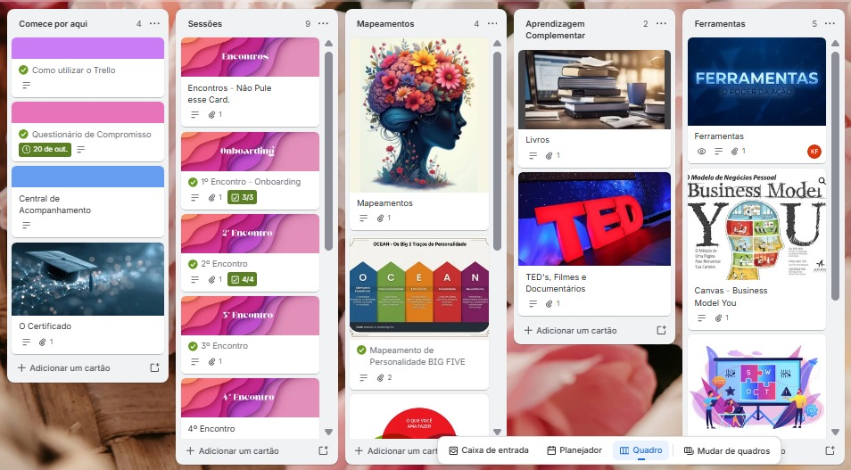

Central no Trello
Acompanhamento estruturado por etapas, sessões, mapeamentos e ferramentas, para que cada insight vire passo concreto e visível.
Um espaço firme e acolhedor para mulheres que já entregam muito, mas sentem que precisam parar de se provar no automático e assumir a autoliderança das próprias decisões, rotas e projetos.
Clareza sem execução vira apenas teoria; execução sem autoconhecimento vira desgaste. O processo combina diagnóstico comportamental, organização prática e profundidade simbólica.

Acompanhamento estruturado por etapas, sessões, mapeamentos e ferramentas, para que cada insight vire passo concreto e visível.

Leitura e reflexão aprofundada sobre autonomia, intuição e identidade feminina — com os 6 primeiros contos na Turma em Grupo e acesso completo na Mentoria Individual.

Organização de rotina e abordagem comercial com intenção e postura — para estruturar conversas, acompanhamentos e oportunidades sem improviso.
Leitura detalhada dos traços de personalidade com devolutiva e micro-ações direcionadas para ajustar postura, comunicação e tomada de decisão.
Compreensão das dinâmicas simbólicas e padrões de atuação que influenciam suas escolhas, lideranças e pontos de atenção.
Desdobramento estratégico aplicado à sua realidade atual — seja na carreira corporativa, na transição ou na construção de negócios e consultório.
Relatos originais de mulheres que passaram pela mentoria — preservando o tom espontâneo de cada conversa e destacando o que mudou na prática.

“Saio da mentoria mais consciente do meu valor, mais segura do meu posicionamento.”

“Saí com 2 contatos pra fazermos workshop... Vou ir abastecendo as informações no trello.”

“Consegui sair da estagnação, retomar projetos que estavam parados, fortaleci minha confiança.”

“Que tudo que você doou para mim... seja multiplicado...”

“Estabelecer metas claras e desenvolver uma visão mais estratégica para minha carreira.”

“Ela fortalece identidade, provoca reflexões poderosas e impulsiona movimentos consistentes.”

“Me ajudou a ter mais clareza de qual caminho eu deveria seguir no momento.”

“Ela conduz todo o processo com firmeza e acolhimento — uma combinação rara.”

“Pensando em projetos de curto e longo prazo e alinhado com meu perfil profissional.”

“Utilização do roadmap... técnica de perdas e ganhos... plano sólido para alcançar meu objetivo de viver do consultório.”

“Esclarecendo pontos de forma bastante cirúrgica... clareza para saber onde estou.”

“E nunca vou esquecer ‘do movimento intencional’... uma mentora amada... que foi uma cirurgiã.”

“Foi nítido o meu desenvolvimento e entendimento sobre mim mesma.”
Duas modalidades pensadas com clareza para quem quer sair da sobrecarga e construir direcionamento real com acompanhamento próximo.
Ideal para quem deseja vivenciar o método com troca de experiências, estrutura guiada e devolutiva individual do perfil.
Para quem busca mergulho profundo, foco total na própria história e direcionamento sob medida para decisões estratégicas.

Por mais de 20 anos, estive à frente de operações complexas e equipes em grande escala no ambiente corporativo, construindo minha base na Economia, nas Finanças Corporativas e na Gestão de Pessoas. Ao longo dessa trajetória, aprendi a ler números, cenários e pessoas — e a perceber que muitas mulheres altamente capazes se desgastam tentando provar competência em vez de construir um direcionamento próprio.
Hoje, à frente do IKF – Instituto Kátia Freitas, uno o rigor estratégico e analítico da gestão à profundidade do comportamento humano, da neurociência aplicada à comunicação e do olhar junguiano sobre a psique feminina.
Meu compromisso é oferecer um espaço firme e acolhedor para que você assuma a autoliderança das suas escolhas, organize sua rota com clareza e transforme intenção em movimento consistente.
Na Mentoria em Grupo (Turma Fundadora), você participa de 6 encontros quinzenais em grupo e conta com 1 sessão individual de devolutiva do Big Five. Na Mentoria Individual, o acompanhamento acontece em 8 sessões quinzenais exclusivas 1 a 1, com foco integral no seu momento e nas suas metas.
Não. O trabalho é focado em mentoria, autoliderança, desenvolvimento comportamental, estratégia de carreira/negócios e leitura simbólica/arquetípica, sem caráter de psicoterapia clínica ou diagnóstico médico/psicológico.
Na Mentoria em Grupo, você participa dos 6 primeiros contos de Mulheres que Correm com os Lobos. Na Mentoria Individual, você tem acesso completo ao Clube do Livro.
A inscrição é feita diretamente pelos links oficiais da Hotmart disponíveis nesta página, conforme a modalidade escolhida. Assim que o pagamento é confirmado, você recebe as orientações para iniciar o seu processo.